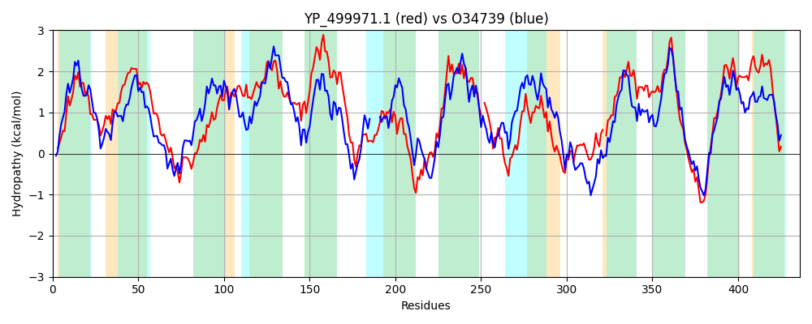

Hit Accession: O34739
Hit TCID: 2.A.3.8.12
Hit Description: gnl|BL_ORD_ID|7146 gnl|TC-DB|O34739|2.A.3.8.12 YkbA protein - Bacillus subtilis.
Mach Len: 436
e:0.000000
Query TMS Count : 12
Hit TMS Count: 12
TMS-Overlap Score: 10.400000
Predicted Substrates:CHEBI:16857;L-threonine, CHEBI:9116;serine, CHEBI:5733;histidine, CHEBI:8089;phenylalanine, CHEBI:9769;tryptophan, CHEBI:9800;tyrosine
BLAST Alignment:
Score: 913 , Bit scores: 356 bits, E-value: 7.0e-120, Alignment length: 436, Percentage identity: 43
Query: 7 LQKNIGFFSAFAIVMGTVIGSGVFFKISNVTEVTGTAGMALFVWFLGGIITICAGLTAAELAAAIPETGGLTKYIEYTYGDFWGFLSGWAQSFIYFPANVAALSIVFATQLINLFHLSIGSLIPIAIASALSIVLINFLGSKAGGILQSVTLVIKLIPIIVIVIFGIFQSGDITFSLIPTTGNSGNGFFTAIGSGLLATMFAYDGWIHVGNVAGELKNPKRDLPLAISVGIGCIMAVYLLINATFLLTLPI-ELLAGNLNAASDTSKILFGENGGKIITIGILISVYGTINGYTMTGMRVPYAMAERKLLPFSHLFAKLTKS-GAPWFGAIIQLIIAIIMMSMGAFDTITNMLIFVIWLFYCMSFVAVIILRKREPNMERPYKVPLYPIIPLIAILAGSFVLINTLFTQFILAIIGILITALGIPVYYYKKKQKAA 440
L+K IG A +V+GT+IGSGVF K V +G + MALF W LGGI+T+ GLT AE+ IP+TGGL Y+E YG+FWGFL GW Q IY PA + AL + F + + NLF G I I + L + +IN +G+K GG +Q++T + KLIPI I++FG+++ F+ + + + N G+ +LAT+FAYDGWI + + GE+KNP++ LP A++ G+ + A+Y+ IN L L E++ NA S + +LFG GGK+I++GI++S++G +NG ++ RV +AMAERK LPF+ + + S PW Q+ +A+IMM + D ++ + IF+I++FY M+F AV ILRKR +R Y VPLYP +P++AI FVL +TL T + + ILI G+PVYY KK+KA+
Sbjct: 8 LKKEIGLLFALTLVIGTIIGSGVFMKPGAVLAYSGDSKMALFAWLLGGILTLAGGLTIAEIGTQIPKTGGLYTYLEEVYGEFWGFLCGWVQIIIYGPAIIGALGLYFGSLMANLFGWGSGLSKVIGIIAVLFLCVINIIGTKYGGFVQTLTTIGKLIPIACIIVFGLWKGDQHIFTAVNESISDMN-----FGAAILATLFAYDGWILLAALGGEMKNPEKLLPRAMTGGLLIVTAIYIFINFALLHILSANEIVTLGENATSTAATMLFGSIGGKLISVGIIVSIFGCLNGKVLSFPRVSFAMAERKQLPFAEKLSHVHPSFRTPWIAISFQIALALIMMLISNPDKLSEISIFMIYIFYVMAFFAVFILRKRAKGEKRAYSVPLYPFMPILAIAGSFFVLGSTLITDTMSCGLSILIGLAGLPVYYGMKKRKAS 438 | Protein Hydropathy Plots: |
|---|
| |
Pairwise Alignment-Hydropathy Plot:
|
|---|
|  |